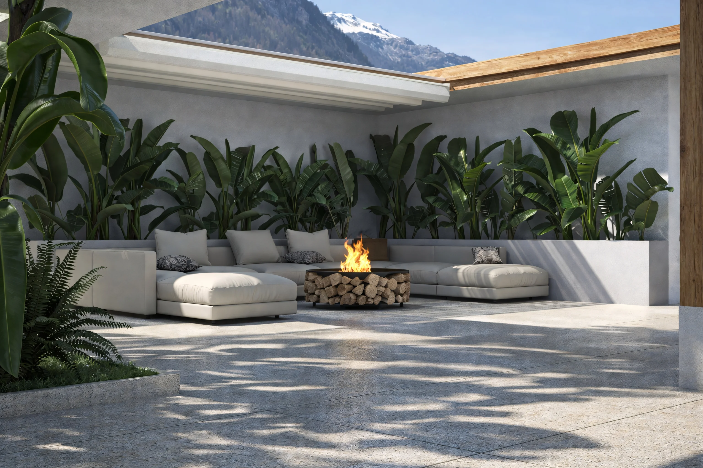
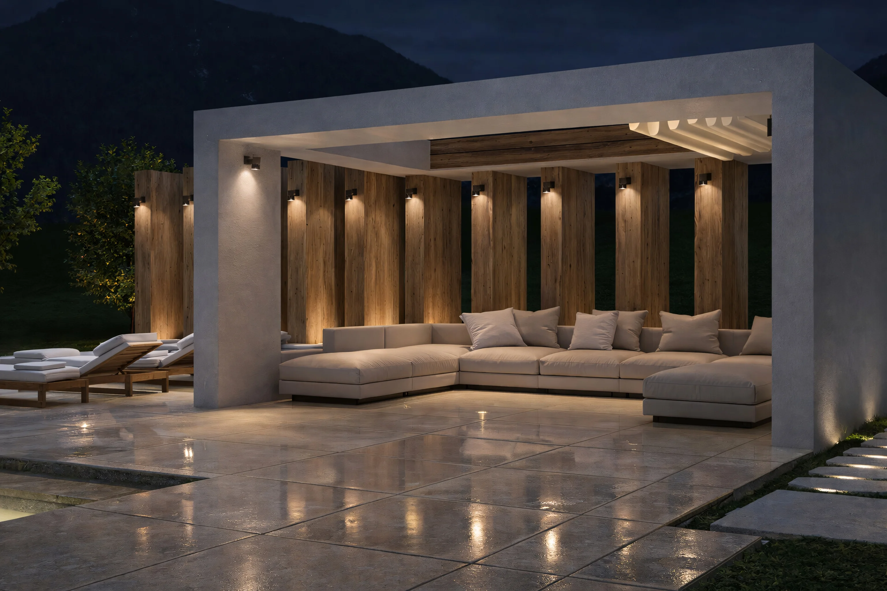
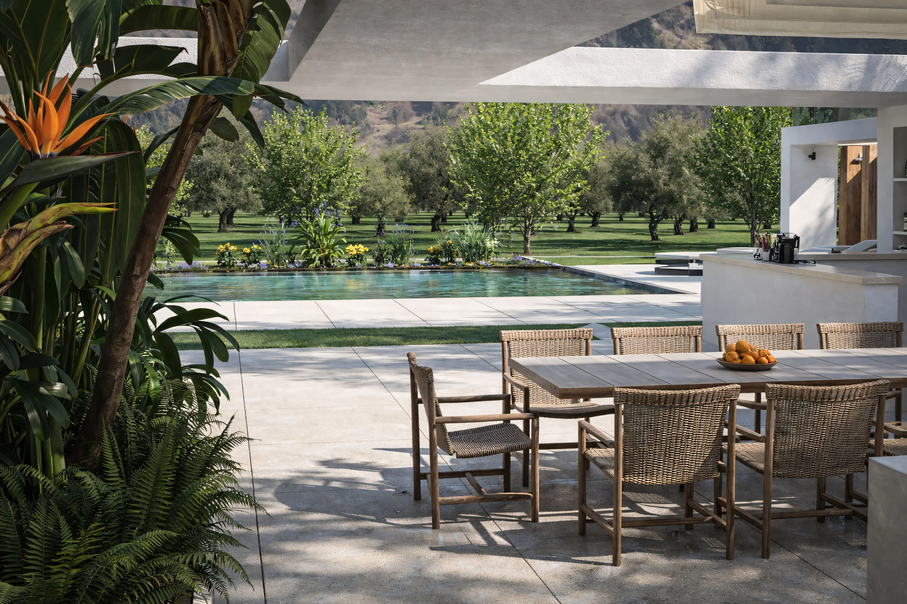
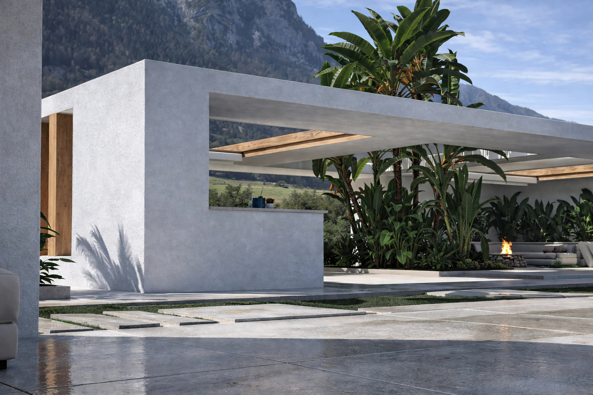
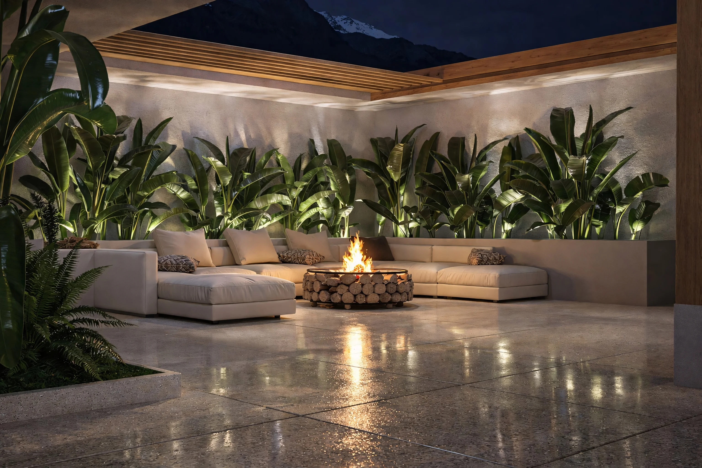
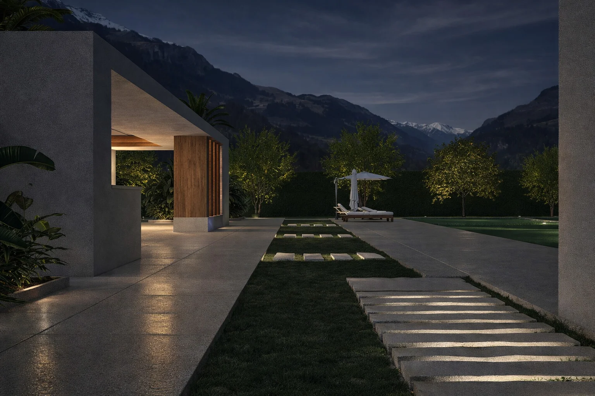
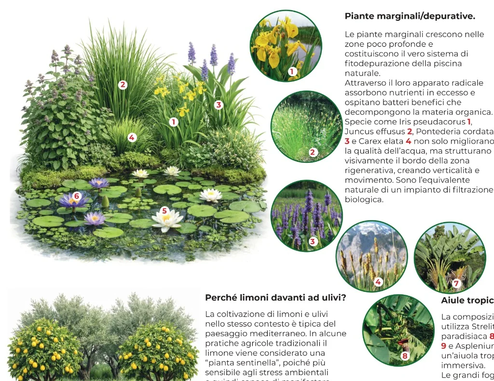
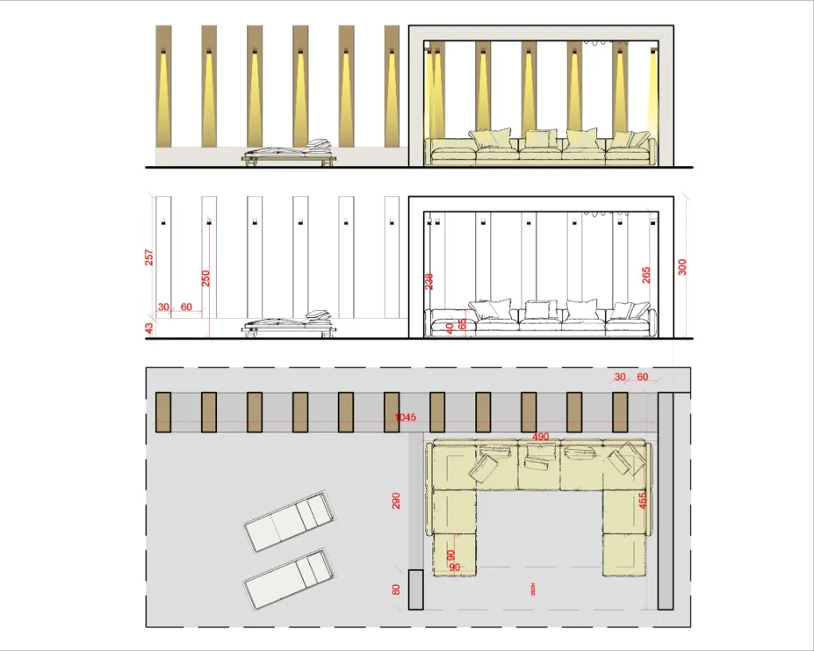
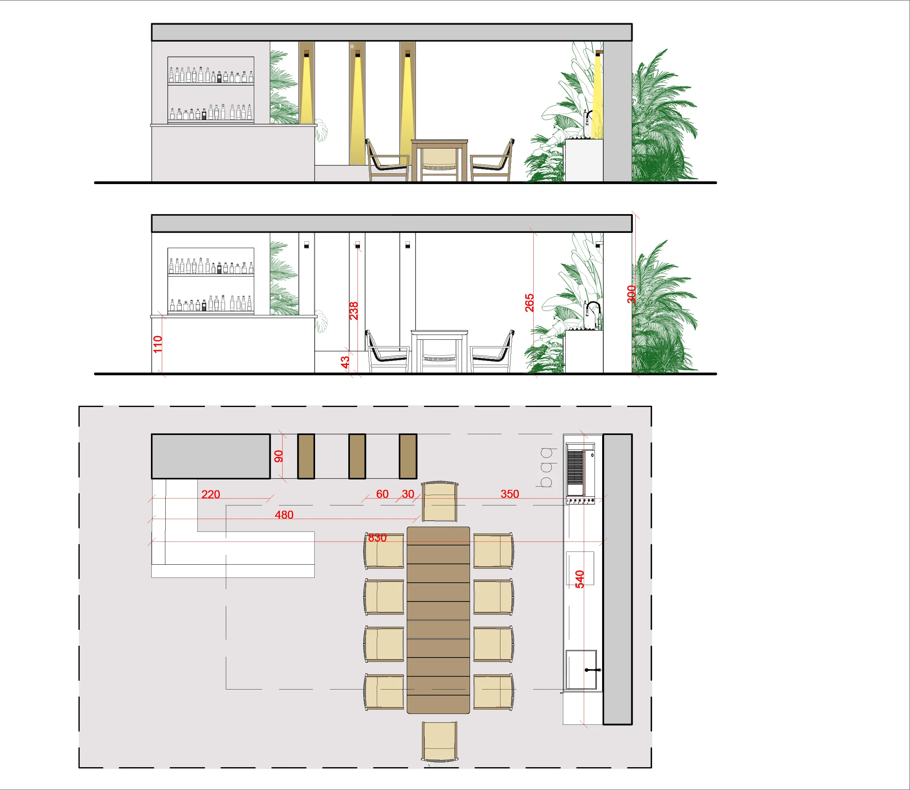

MATESE OUTDOOR
Architettura e Natura in Equilibrio
Il progetto Matese Outdoor nasce dalla volontà di creare un dialogo profondo tra l'architettura antropica e il paesaggio naturale. Il cuore dell'intervento è una piscina fitodepurativa, attorno alla quale si sviluppano due strutture monumentali concepite come architetture scultoree.
Questi volumi puri e bianchi evocano deliberatamente la memoria degli antichi templi greci e romani. Il loro carattere imponente non è affidato alla decorazione, ma alla ripetizione ritmica di pilastri in legno lamellare, che reinterpretano in chiave moderna il classico colonnato.

La biopiscina, un sistema in cui l'ingegneria naturalistica sostituisce i tradizionali impianti di filtrazione chimica. Questo specchio d'acqua non è solo un elemento decorativo, ma un organismo vivo che si rigenera autonomamente attraverso un ciclo biologico perfetto, garantito da tre categorie di piante specializzate:
- Filtrazione Radicale: Iris pseudacorus e Juncus effusus agiscono come un impianto di filtraggio naturale.
- Regolazione Termica: Nymphaea alba scherma la superficie, limitando la proliferazione algale.
- Ossigenazione: Ceratophyllum demersum rilascia ossigeno costante, garantendo limpidezza cristallina.

Questo progetto è l'esito di una ricerca accademica maturata durante il Biennio Specialistico (anno accademico 2025/2026) presso l'Accademia Italiana di Roma, sotto la supervisione del Prof. Fabio Valente.









